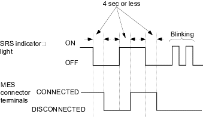

SRS
General Troubleshooting Information (cont'd)
|
23-39 |
|
Initialising the OPDS (Occupant Position Detection System) Unit
When the seat-back cover, seat-back cushion or (and) OPDS unit assembly are replaced with a new one, initialise the OPDS unit links with the OPDS sensor by following the procedure below.
NOTE: Make sure the passenger's seat is dry, set the seat-back in the normal position, and make sure there is nothing sitting on the front passenger's seat.
- Make sure the ignition switch is OFF.
- With service check connector (2P)models: connect the SCS short connector to the service check connector (2P). Without service check connector (2P) models: connect the DLC terminal box to the DLC (16P), and connect the DLC terminal box terminals No. 4 and No. 9 with a jumper wire and push the operation switch.
- Connect the SCS short connector (A) to the MES connector (2P) (B). Do not use a jumper wire.

- Turn the ignition switch ON (II).
- The SRS indicator light comes on for about 6 seconds and goes off. Remove the SCS short connector from the MES connector within 4 seconds after the SRS indicator light went off.
- The SRS indicator light comes on again. Reconnect the SCS short connector to the MES connector within 4 seconds after the SRS indicator light comes on.
- The SRS indicator light goes off. Remove the SCS short connector from the MES connector within 4 seconds.
- The SRS indicator light indicates that the OPDS unit is initialised by blinking 2 times, then goes off.
If the light does not blink 2 times and stay on, repeat this procedure beginning with step 1.
If the light stays on after blinking 2 times, read the DTC and proceed with troubleshooting procedures.
- Turn the ignition switch OFF and wait for 10 seconds. Disconnect the DLC terminal box from the DLC (16P), or disconnect the SCS short connector from the service check connector (2P).
Turn the ignition switch ON (II) again after the procedure. The SRS indicator light comes on for about 6 seconds and goes off. If the SRS indicator light does not come on again after 30 seconds, the initialisation of the OPDS unit is complete and the system is OK.
